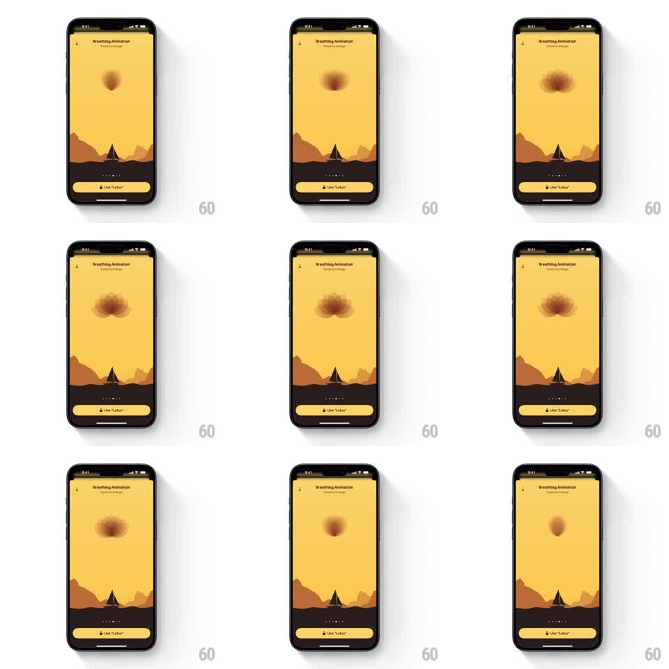

Media
Frame-by-frame

Rebuild this animation 1:1: Unwind's lotus breathing guide - over the desert scene, a soft blurred lotus form blooms open and folds closed in a slow rhythm to pace breathing.

Rebuild this animation 1:1: Unwind's lotus breathing guide - over the desert scene, a soft blurred lotus form blooms open and folds closed in a slow rhythm to pace breathing. ## Integration Integration: stack-agnostic spec - springs given as stiffness/damping, timed motions as duration + curve; map every value to your framework and animation library of choice. ## Scene Unwind's "Breathing Animation" screen: the warm yellow sky, dark dunes, and tent silhouette, page dots and a "Use 'Lotus'" button at the bottom. In the sky floats a soft lotus shape in deep terracotta with heavily blurred, glowing edges - a small tight bud that opens into a wide many-petaled bloom and folds back. ## Motion spec Pattern: lotus breathing loop, ~8s per breath. - Inhale (~4s): the lotus expands from a small dense bud (scale 0.35 to 1.0, ease-in-out), outer petals unfurling a beat after the core (~150ms lag), edges blurring softer at full bloom. - Hold (~1s): the open bloom pulses faintly in brightness (opacity 0.85 to 1). - Exhale (~4s): petals fold inward, outer first, the form tightening back into the small bud without ever disappearing. - The blur radius breathes with the scale - softest at full bloom, slightly sharper when closed. - The desert scene and chrome stay perfectly still; the lotus is the only moving element. ## Calibration - Everything is soft-focus - no hard petal edges anywhere. - The bud is small but always present between breaths. ## Reduced motion The lotus crossfades between bud and bloom. ## Don't miss - The layered petals are visible as nested soft shapes, not a single blob. - The form hovers mid-sky like a setting sun above the dunes.